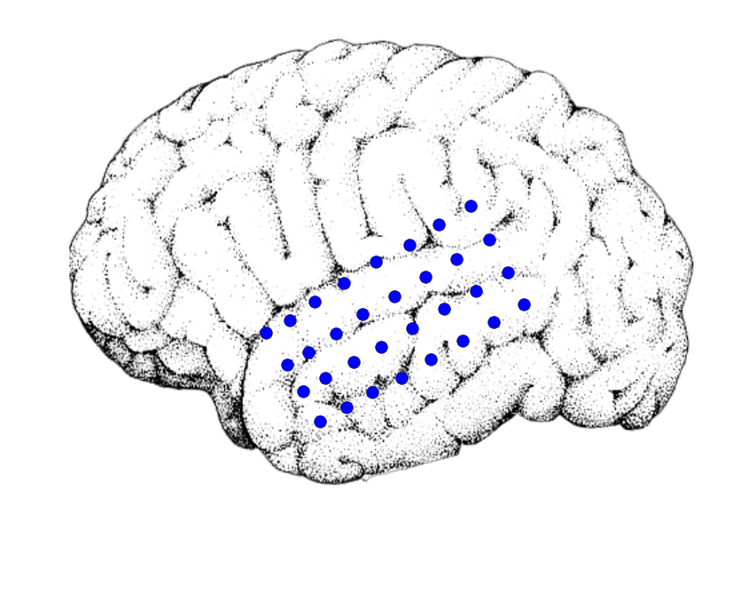

This is a quick demo of how I created this video. Check it out below, or read on to see the code that made it!
from IPython.display import YouTubeVideo
YouTubeVideo('lZS4uaTBrh8')
import pandas as pd
import mne
import numpy as np
import scipy.io.wavfile as wav
import matplotlib.pyplot as plt
from moviepy.editor import VideoClip, ImageClip, AudioFileClip
from moviepy.video.io.bindings import mplfig_to_npimage
from sklearn.preprocessing import MinMaxScaler
import colorbabel as cb
%matplotlib inline
Jingle Bells!#
Here’s a quick viz to show off some brainy holiday spirit.
We’ll use matplotlib and MoviePy to read in an audio file and generate a scatterplot that responds to the audio qualities.
# Load the audio clip with MoviePy to save to the movie later
path_audio = '../../../../data/jinglebells.wav'
audio_clip = AudioFileClip(path_audio)
# Now load the sound as an array for manipulation
sfreq, audio = wav.read(path_audio)
audio = audio.T[0]
# This is the amount of time the audio takes up
time_audio = audio.shape[-1] / float(sfreq)
print('Total time: {}'.format(time_audio))
# Now read some brain info for plotting
# NOTE: this is broken, but it's an old post so I'm going to just pretend it isn't broken :-)
# melec = pd.read_csv('../../../../data/brain/meta_elec.csv')
# im = plt.imread('../../../../data/brain/brain.png')
We’ll use the spectral content in the audio to drive activity in the electrodes. Here’s what I’m talking about by spectral content:
# A pretty spectrogram of audio
fig, ax = plt.subplots()
_ = ax.specgram(audio[100000:200000], Fs=sfreq, cmap=plt.cm.viridis)
plt.autoscale(tight=True)
ax.set(ylim=[None, 8000])
[(0.0, 8000)]
We’ll extract this information again below so we can make the viz…
# Resample the audio so that it's not so long to process
sfreq_new = 11025
audio = mne.filter.resample(audio, sfreq_new, sfreq)
# Now extract a spectrogram of the audio
decim = 400
sfreq_amp = sfreq_new / float(decim)
freqs = np.logspace(np.log10(400), np.log10(6000), 10)
spec = mne.time_frequency.tfr._compute_tfr(
audio.reshape([1, 1, -1]), freqs, sfreq=sfreq_new, decim=decim)
spec = np.abs(spec).squeeze()
# Low-pass filter the spectrogram so it varies more smoothly
spec = mne.filter.filter_data(spec, sfreq_amp, None, 5)
Now, we’ll assign each electrode to a particular point on the y-axis of the spectrogram. We’ll assign based off of the height of each electrode.
# Now bin the y-point of each electrode and assign it to a specotrogram bin
y_bins = np.linspace(melec['y_2d'].min(), melec['y_2d'].max(), len(freqs))
binned_elecs = np.digitize(melec['y_2d'].values, y_bins)
# Scale the amplitude of each frequency band and assign them to electrodes
scaler = MinMaxScaler(feature_range=(0, 1.6))
amplitudes = spec[binned_elecs - 1, :]
amplitudes_scaled = np.clip(scaler.fit_transform(amplitudes.T).T, None, 1)
# Scaling etc for the scatterplot
amplitudes_sizes = np.clip(amplitudes_scaled, .01, None) * 100
amplitudes_sizes **= 2
amplitudes_sizes *= 1 # Set to 1 to not change size at all
# Set the sampling frequency for the video so it fills up all the audio time
n_frames = amplitudes.shape[-1]
duration = time_audio
sfreq_video = n_frames / duration
print(sfreq_video)
27.5642161205%2525250A
Making the movie#
# Here is our colorbar
trans = cb.ColorTranslator(['red', 'green'])
cmap = trans.to_diverging(mid_spread=.8)
cb.ColorTranslator(cmap).show_colors()
# Here's an example of what the plot looks like
fig, ax = plt.subplots(figsize=(10, 10))
ax.imshow(im)
ax.set_axis_off()
scat = ax.scatter(*melec[['x_2d', 'y_2d']].values.T, s=100)

# This function maps a time (in seconds) onto an index
# It sets the scatterplot sizes from that index
# Then it returns the image of the figure.
def animate_scatterplot(t):
ix = int(np.round(t * sfreq_video)) - 1
sizes = amplitudes_sizes[:, ix]
colors = amplitudes_scaled[:, ix]
scat.set_sizes(sizes)
scat.set_color(cmap(colors))
return mplfig_to_npimage(fig)
# Now we'll create our videoclip using this function, and give it audio
clip = VideoClip(animate_scatterplot, duration=duration)
clip.audio = audio_clip
# Finally, write it to disk
clip.write_videofile('../data/jinglebells.mp4', fps=sfreq_video, audio=True)
%2525255BMoviePy%2525255D%25252520%25252526gt%25252526gt%25252526gt%25252526gt%25252520Building%25252520video%25252520../data/jinglebells.mp4%2525250A%2525255BMoviePy%2525255D%25252520Writing%25252520audio%25252520in%25252520jinglebellsTEMP_MPY_wvf_snd.mp3%2525250A%2525255BMoviePy%2525255D%25252520Done.%2525250A%2525255BMoviePy%2525255D%25252520Writing%25252520video%25252520../data/jinglebells.mp4%2525250A%2525255BMoviePy%2525255D%25252520Done.%2525250A%2525255BMoviePy%2525255D%25252520%25252526gt%25252526gt%25252526gt%25252526gt%25252520Video%25252520ready%2525253A%25252520../data/jinglebells.mp4%25252520%2525250A%2525250A
And now you’ve got a great video!
Credit for the nice brain image goes to the excellent Benedicte Rossi